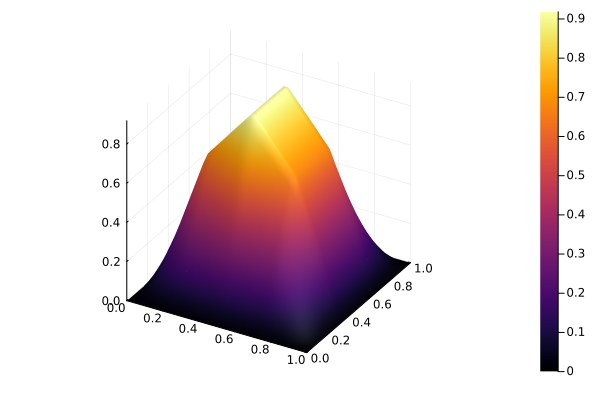

Equação similar à Poisson no espaço bidimensional
Para este tutorial é esperado que você tenha seguido o passo a passo em Para começar a utilizar. As próximas etapas serão parecidas com as apresentadas no artigo.
A equação
Como apresentado no título, a equação a ser resolvida é similar à de Poisson, com uma parcela extra. Portanto, vamos ao problema:
Dada uma função $f: \bar{\Omega} \to \mathbb{R}$ e constantes reais $\alpha > 0$ e $\beta \geq 0$, determine $u: \bar{\Omega} \to \mathbb{R}$ tal que
\[\left\{ \begin{aligned} -\alpha\Delta u(x) + \beta u(x) = f(x),\quad x\in \Omega\\ u(x) = 0, \quad x \in \Gamma \end{aligned} \right.\]
sendo $\Omega$ um subconjunto do $\mathbb{R}^2$, $\Gamma$ a fronteira de $\Omega$ e $\bar{\Omega} = \Omega \cup \Gamma$.
Assim, o que queremos é encontrar uma solução aproximada de $u$ com o Fease.jl. A seguir temos o passo a passo para obtê-la.
Passo a passo
Comece importando o pacote
using FeaseDefina o tipo do conjunto de funções da base e a quantidade de intervalos em ambas as dimensões, assim como o número de elementos, considerando uma malha retangular uniforme.
baseType = BaseTypes.linearLagrange
Nx1, Nx2 = 4, 4Em seguida, defina os pontos de intervalo da malha e chame uma função para construção da malha. Nesse exemplo, utilizaremos monta_malha_2D_uniforme.
a = (0.0, 0.0) # Inicio do intervalo
b = (1.0, 1.0) # Fim do intervalo
malha = monta_malha_2D_uniforme(baseType, Nx1, Nx2, a, b)Agora, definimos alguns parâmetros do problema
α = 1.0
β = 1.0
f = (x₁, x₂) -> (2 * α * π^2 + β) * sin(π * x₁) * sin(π * x₂)
u = (x₁, x₂) -> sin(π * x₁) * sin(π * x₂)Em seguida, montamos uma função que referencia o operador bilinear $a(u,v)$ com parâmetros obtidos de run_values.
function pseudo_a(termos_equacao::TermosEquacao)
(; ∇u, ∇v, u, v) = termos_equacao
return β * dot(u, v) + α * dot(∇u, ∇v)
endEnfim, com a f e a malha definidas e o operador $a(u, v)$ referenciado, basta resolver o sistema, com
c = solve_sys(f, malha, pseudo_a)Resultando em
9-element Vector{Float64}:
0.527459460647701
0.7459403228499766
0.5274594606477011
⋮
0.7459403228499767
0.5274594606477011Com esse resultado também é possível utilizar um método implementado internamente para plotar esse resultado,
plot_solucao_aproximada(C, malha, false)Resultando no gráfico

Você também pode aplicar o tutorial de Estudo de Convergência do Erro e verificar se a convergência do erro segue o esperado. Caso contrário, revise seu código e encontre o erro.